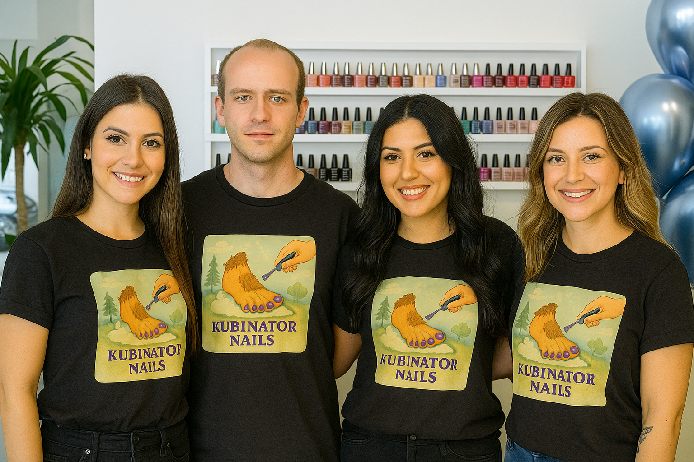

Wir sind Kubinator Nails – wo Leidenschaft auf Lack trifft. Unser Team lebt und atmet Glitzer, Präzision und 80s-Disco-Vibes. Jede Behandlung bei uns ist mehr als Pflege – sie ist eine Zeremonie, ein Erlebnis, ein Manifest für schöne Hände und Füße.
„Ein Tempel der Sinnlichkeit! Noch nie hat mir jemand so hingebungsvoll die Hornhaut vom Fuß gelutscht. Ich schwebe.“
„Etwas viel Blut, aber ich fühl mich wie neugeboren. 4 Sterne, Hose kaputt.“
„Die Nägel glänzen heller als meine Zukunft. Meine Nagelhaut lebt jetzt in China.“
„Der Kubinator hat gefragt, ob er meiner Oma die Füße massieren darf. Ich komm trotzdem wieder.“
„Ich kam für eine Maniküre, ich ging mit grünen Acrylnägeln, einem gestreichelten Kaninchen und sehr weichen Füßen.“
„Die Creme roch wie flüssige Verführung. Meine Nägel? Liebesobjekte in Händen eines Künstlers.“